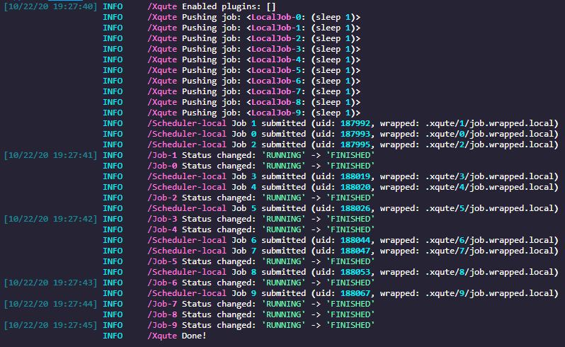

Home
xqute
A job management system for python
Features
- Written in async
- Plugin system
- Scheduler adaptor
- Job retrying/pipeline halting when failed
Installation
pip install xqute
A toy example
import asyncio
from xqute import Xqute
async def main():
# 3 jobs allowed to run at the same time
xqute = Xqute(scheduler_forks=3)
for _ in range(10):
await xqute.put('sleep 1')
await xqute.run_until_complete()
if __name__ == '__main__':
asyncio.run(main())

API
https://pwwang.github.io/xqute/
Usage
Xqute object
An xqute is initialized by:
xqute = Xqute(...)
- scheduler: The scheduler class or name
- plugins: The plugins to enable/disable for this session
- job_metadir: The job meta directory (Default:
./.xqute/) - job_error_strategy: The strategy when there is error happened
- job_num_retries: Max number of retries when job_error_strategy is retry
- job_submission_batch: The number of consumers to submit jobs
- scheduler_forks: Max number of job forks
- **scheduler_opts: Additional keyword arguments for scheduler
Note that the producer must be initialized in an event loop.
To push a job into the queue:
await xqute.put(['echo', 1])
Using SGE scheduler
xqute = Xqute('sge',
scheduler_forks=100,
qsub='path to qsub',
qdel='path to qdel',
qstat='path to qstat',
sge_q='1-day',
...)
sge_ will be interpreted as qsub options. list or tuple option values will be expanded. For example:
sge_l=['h_vmem=2G', 'gpu=1'] will be expanded in wrapped script like this:
# ...
#$ -l h_vmem=2G
#$ -l gpu=1
# ...
Plugins
To write a plugin for xqute, you will need to implement the following hooks:
on_init(scheduler): Right after scheduler object is initializedon_shutdown(scheduler, sig): When scheduler is shutting downon_job_init(scheduler, job): When the job is initializedon_job_queued(scheduler, job): When the job is queuedon_job_submitted(scheduler, job): When the job is submittedon_job_killing(scheduler, job): When the job is being killedon_job_killed(scheduler, job): When the job is killedon_job_failed(scheduler, job): When the job is failedon_job_succeeded(scheduler, job): When the job is succeeded
Note that all hooks are corotines except on_init and on_shutdown, that means you should also implement them as corotines (sync implementations are allowed but will be warned).
To implement a hook, you have to fetch the plugin manager:
from simplug import Simplug
pm = Simplug('xqute')
# or
from xqute import simplug as pm
and then use the decorator pm.impl:
@pm.impl
def on_init(scheduler):
...
Implementing a scheduler
Currently there are only 2 builtin schedulers: local and sge.
One can implement a scheduler by subclassing the Scheduler abstract class. There are three abstract methods that have to be implemented in the subclass:
from xqute import Scheduer
class MyScheduler(Scheduler):
name = 'my'
job_class: MyJob
async def submit_job(self, job):
"""How to submit a job, return a unique id in the scheduler system
(the pid for local scheduler for example)
"""
async def kill_job(self, job):
"""How to kill a job"""
async def job_is_running(self, job):
"""Check if a job is running
The uid can be retrieved from job.lock_file
"""
As you may see, we may also need to implement a job class before MyScheduler. The only abstract method to be implemented is wrap_cmd:
from xqute import Job
class MyJob(Job):
async def wrap_cmd(self, scheduler):
...
You have to use the trap command in the wrapped script to update job status, return code and clear the lock file.